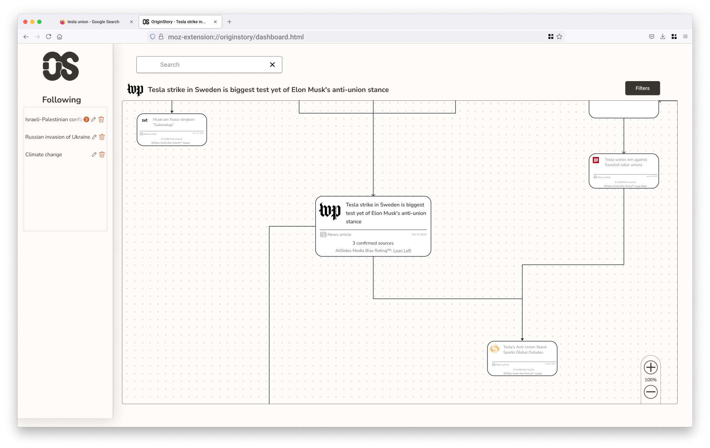
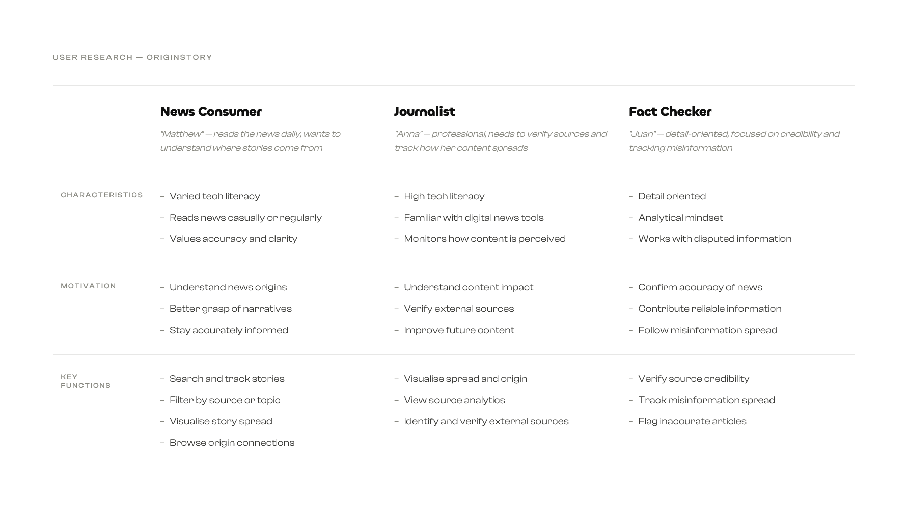
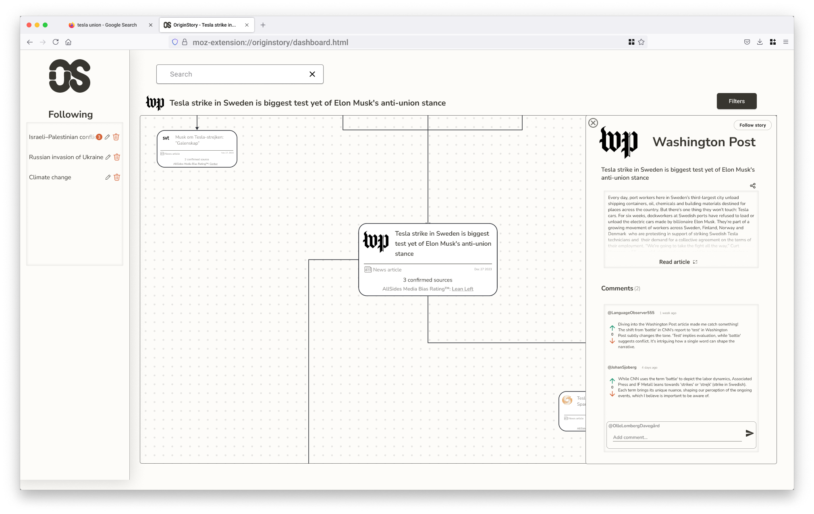
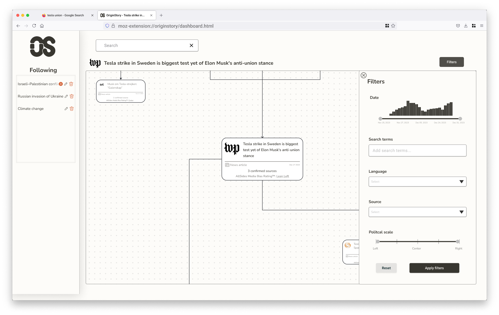
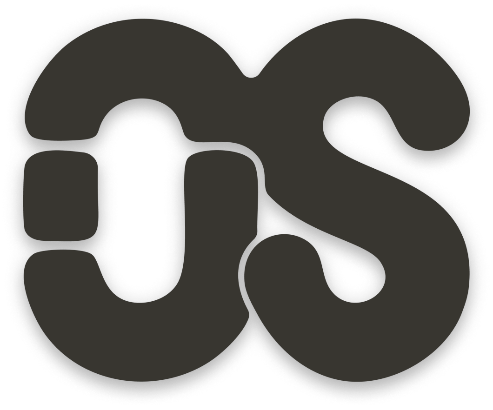

News has layers. Most interfaces pretend it doesn't.
OriginStory is a browser extension that helps readers understand how a story evolves across sources — tracking shifts in framing, bias, and the relationships between outlets covering the same event.
The challenge wasn't just making information accessible. It was designing a visual system that could represent genuinely complex, interconnected data without overwhelming the person trying to make sense of it.
A map of the news, not a feed of it
Starting from a service description, I mapped potential user needs across three types: the casual headline reader, the fact-checker, and the researcher. Each had a different tolerance for complexity and a different entry point into a story.
The core tension was depth versus legibility. Existing tools either surfaced too much raw data or flattened the nuance entirely. The opportunity was in the middle — a view that gives structure without demanding effort.

Two patterns, one surface
The interface runs on two interlocking patterns: a Dashboard View — a map of interconnected sources that makes story relationships visible at a glance — and a Canvas Plus Palette, where the map acts as workspace and the filter panel acts as tool.
Wireframes let me pressure-test these patterns before committing to visual decisions. In the prototype, clicking a node expands it to reveal source context and reader commentary. The filter system narrows by outlet, bias rating, or topic — control without friction.
The visual language borrows from print: off-white backgrounds, high-contrast type, a tight palette. The goal was for OriginStory to feel like a natural extension of the browser, not a dashboard bolted on top.


Feedback built into every move
While developing the interactive prototype, I integrated two additional interface patterns to improve usability — ensuring the interface communicates clearly at every step.
Subtle animations provide visual feedback during interactions — hover states, selection states, and zooming within the map view, making navigation feel more intuitive and fluid.

Spinner animations appear when applying filters to the map view, giving clear feedback that the system is processing — reducing uncertainty during data-heavy interactions.

The OS mark is two letterforms that share space without fully merging — the same logic the product is built on. Sources cover the same story from different positions; some drift in terminology, some in framing, some in what they choose to leave out. The mark holds that tension in a single shape.

Designed to think with, not just look at
OriginStory pushed me to design for complexity without hiding it — a UI where the relationships between sources are the content, not just context.
Next steps would be live data and motion: letting the network animate as a story evolves in real time.